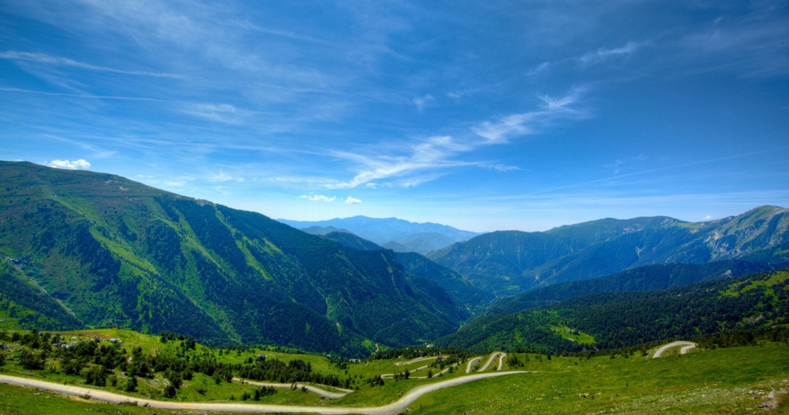

ARAKU VALLEY
Araku Valley is a hill station in Alluri Sitharama Raju district in the Indian state of Andhra Pradesh, lying 111 km west of Visakhapatnam city. It is a valley in the Eastern Ghats inhabited by different tribes, mainly Araku Tribes.
Araku is located in the Eastern Ghats about 114 kilometres (71 mi) from Visakhapatnam, close to the Odisha state border. The Anantagiri and Sunkarimetta Reserved Forest, which are part of Araku Valley, are rich in biodiversity and are mined for bauxite. Galikonda hill rising to a height of 5,000 feet (1,500 m) is amongst the highest peaks in Andhra Pradesh. The average rainfall is 1,700 millimetres (67 in), the bulk of which is received during June–October. The altitude is about 1300 m above the sea level. The valley spreads around 36 km.
HORSELY HILLS

Horsley Hills or Horsleykonda or Yenugulla Mallamma Konda is a series of hills in Andhra Pradesh in Madanapalle Taluka of Annamayya district and is about 9 miles from Madanapalle town. The local name of the hill was Yenugu Mallama Konda after a legend of a saintly old woman named Mallamma who lived at the top of the hill and was fed by elephants (yenugulu). W.D. Horsley, a British collector, built his home around 1870 after whom it is named. In contrast to the dry and hot surrounding, this area is well vegetated with cooler climate. This made it attractive as a hill station and a tourist spot.
NALLAMALA HILLS
The Nallamalas (also called the Nallamalla Range) are a section of the Eastern Ghats which forms the eastern boundary of Rayalaseema region of the state of AndhraPradesh and Nagarkurnool district of the state of Telangana, in India. They run in a nearly north–south alignment, parallel to the Coromandel Coast for close to 430 km between the rivers, Krishna and Pennar. Its northern boundaries are marked by the flat Palnadu basin while in the south it merges with the Tirupati hills. An extremely old system, the hills have extensively weathered and eroded over the years. The average elevation today is about 520 m which reaches 1100 m at Bhairani Konda and 1048 m at Gundla Brahmeswara. Both of these peaks are in a north westerly direction from the town of Cumbum. There are also many other peaks above 800m.
LAMBASINGI

Lambasingi (or Lammasingi) is a small village in the Eastern Ghats of Chintapalli Mandal of Alluri Sitharama Raju district in the Indian state of Andhra Pradesh. With an altitude that of 1000 m (3280 ft) above sea level, the area is cooler than the surrounding plains and is covered in moist deciduous forest cover. There are several coffee, pine, and eucalyptus plantations around the area and some small attempts to grow apple and strawberry.
The region was formerly densely covered in forests and known in the past to have supported tigers. The large wildlife in the region includes gaur. The region is known for its diversity of bird life which were studied by numerous ornithologists including Trevor Price, Dillon Ripley, Bruce Beehler and K. S. R. Krishna Raju.
ANANTHAGIRI HILLS
Ananthagiri Hills is located in Vikarabad district,[1] Telangana, India.[2][3][4] The water flows from these hills to Osman Sagar, also known as Gandipet lake, and Himayathsagar.
It is one of the dense forests in Telangana. Ananthagiri Temple is located in this forested area. It is the birthplace of Musi river, also called as Muchkunda River, which flows through Hyderabad, 5 km from Vikarabad.
Ananthagiri forest Anantha Padmanabhaswamy Temple..
It is one of the earliest habitat areas. Ancient caves, medieval fort structures and temple shows the antiquity of this area.
YELAGIRI HILLS

Yelagiri is a hill station located in the newly formed Tirupattur district of Tamil Nadu, India, situated off the Vaniyambadi-Tirupattur road.[1] Located at an altitude of 1,110.6 metres above Mean Sea Level and spread across 30 km2, the Yelagiri Hill (also spelled Elagiri Hill at times) is surrounded by orchards, rose-gardens, and green valleys.
Yelagiri is a branch of Annamalai Hills. Yelagiri or Elagiri is a small hill station located in between the towns of Vaniyambadi and Jolarpettai (Tamil Nadu, India). The hill station dates back to the British colonial days.
"The Whole of Yelagiri was once the private property of the Yelagiri Zamindar Family. It was taken over by the government of India during the Early 1950s. The house of the Yelagiri Zamindars still exists in Reddiyur.
British administered Elagiri (Neelagiri) or Swami Malai or Kolli Malai. During 1960's Yelagiri was refuge to people groups who were involved in Emergency Rule of India. Their near-dynasty was terminated after withdrawal of Emergency Rule. It was left uninhabited until French Missionary Fr. Francis Guezou (Salesian) first arrived who helped Jawadhu Hills people to inhabit the hills. Yelagiri is now over populated by India's corporatism, political ventures and local tourism, since 2007 onwards
NAGARI HILLS
Located in the north of Nagari town in the beautiful state of Andhra Pradesh, Nagari Hills is a circular mountain range known for its scenic beauty and has been an Ultimate place for hikers. The high and mellowest point of the Nagari Hills is a key attraction for several tourist visitors. Let us know more about these beautiful hills here:
Also known as the "Nagari Nose", located in the Chittoor district of Andhra Pradesh and has an altitude of 1050 m. It is known as the Nagari nose because it has a human nose-type form and can be seen from the Lighthouse of Chennai. The Cliff of Nagari Hills is 7 km north of Nagari and is popularly known as Nagari Murkonda.
In medieval times, the Nagari nose was an important lighthouse used to navigate the Bay of Bengal as it was a Landmark serving for the ships to know that they were touching Chennai. It is a place with a pleasant temperature of 32 degrees Celsius to a minimum of 22 degrees Celsius. Nagari Hills has a humid climate and is windy with moderate rain. If you are up for trekking and hiking, be sure to do the activities with utmost safety, as the hills may be slippery during rain.
PAPIKONDA HILLS
Papikonda National Park is a national park in India, located near Rajamahendravaram in the Papi Hills of the Alluri Sitharama Raju and Eluru districts of Andhra Pradesh, and covering an area of 1,012.86 km2 (391.07 sq mi). It is an Important Bird and Biodiversity Area and home to some endangered species of flora and fauna. No part of Papikonda remains outside East and West Godavari districts after 2014 and the construction of Polavaram Dam.
The national park's boundaries lie between 18° 49’ 20" N to 19° 18’ 14" N, 79° 54’ 13" E to 83° 23’ 35" E spread across the Alluri Sitharama Raju and Eluru districts of Andhra Pradesh. Its altitude ranges from 20 to 850 m (66 to 2,789 ft), and it receives an annual rainfall of 1168 mm. Godavari River flows through the park.
NAGALAPURAM
Nagalapuram is a Mandal Headquarter in Tirupati district of the Indian state of Andhra Pradesh. It is the mandal headquarters of Nagalapuram mandal in Srikalahasti revenue division.[3][4] This town is home to Vedanarayana Temple, where the presiding deity Vishnu is in the form of Matsya, the first incarnation of Dasavatara.
Nagalapuram the temple town is built at the time of Krishnadevaraya of Vijayanagara Empire regime in memory of his mother Nagamamba Devi. Hence, it became Sri Nagalapuram. Before the change of its name to Nagalapuram, this village was known as Harigandapuram.